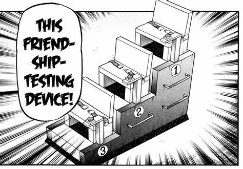

救援游戏
“救援游戏”是由百地谷设计的一种生死游戏，用来测试三个欠他钱的男人——来自菲律宾的马里奥·加西亚、来自中国的陈和来自日本的光山——之间的友谊是否是真正的纽带。[1]
伊藤开司被带入这个游戏中作为一个观察者，并且经常为这三个男人加油，并挑战百地谷对人性腐败的看法。[1]
游戏玩法
这三个男人坐在楼梯形状的座位上，用安全带绑在座位上，安全带只能通过一个释放按钮一次释放一个，他们不允许回头看。他们每个人都戴着一个头盔，头盔顶部有一个灯。[1]
在游戏的每一轮开始时，当前的奖金会翻倍，并且通过头盔上的灯来决定三个男人中的一个“救星”和两个“人质”。救星必须在30秒后但在60秒前释放他们的安全带，并按下房间另一边的一个按钮，否则两个“人质”的头盔会压碎他们的头。[1]
他们必须使用推理和观察的能力来确定他们是救星还是人质——楼梯顶部的玩家处于最佳位置，因为他可以看到其他两个玩家的灯。游戏进行到一半时，百地谷透露，如果救星未能救出两个人质，他将获得当前轮次全部奖金的双倍。[1]
返回